Bài 27: giới thiệu về bảng xoay vòng
Bài 27: Giới thiệu về PivotTable
/en/excel/inspecting-and-protecting-workbooks/content/
Giới thiệu
Khi bạn có nhiều dữ liệu, đôi khi có thể khó phân tích tất cả thông tin trong bảng tính của bạn.PivotTablescó thể giúp làm cho bảng tính của bạn dễ quản lý hơn bằng cáchtóm tắtdữ liệu và cho phép bạnthao tácdữ liệu theo nhiều cách khác nhau.
Xem video bên dưới để tìm hiểu thêm về PivotTable.
Sử dụng PivotTable để trả lời câu hỏi
Hãy xem xét ví dụ dưới đây. Giả sử chúng ta muốn trả lời câu hỏiSố lượng bán được của mỗi nhân viên bán hàng là bao nhiêu?Việc trả lời câu hỏi này có thể tốn thời gian và khó khăn; mỗi nhân viên bán hàng xuất hiện trên nhiều hàng và chúng tôi sẽ cần tính tổng tất cả các đơn hàng khác nhau của họ một cách riêng lẻ. Chúng ta có thể sử dụng lệnhSubtotalđể giúp tìm tổng số cho mỗi nhân viên bán hàng, nhưng chúng ta vẫn sẽ có nhiều dữ liệu để làm việc.
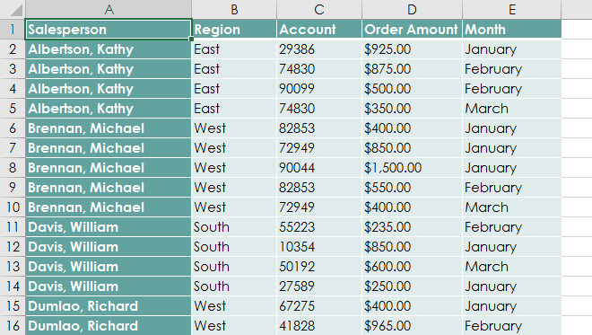
May mắn thay, PivotTable có thể ngay lập tứctính toánvàtóm tắtdữ liệu theo cách giúp dữ liệu dễ đọc hơn nhiều. Khi chúng ta hoàn tất, PivotTable sẽ trông giống như thế này:
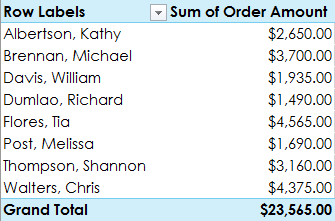
Sau khi tạo PivotTable, bạn có thể sử dụng nó để trả lời các câu hỏi khác nhau bằng cách sắp xếp lại—hoặcxoay vòng—dữ liệu. Ví dụ: giả sử chúng tôi muốn trả lờiTổng số tiền bán được trong mỗi tháng là bao nhiêu?Chúng tôi có thể sửa đổi PivotTable của mình để trông như thế này:
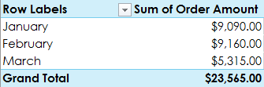
Để tạo PivotTable:
- Chọnbảnghoặcô(bao gồm tiêu đề cột) mà bạn muốn đưa vào PivotTable của mình.
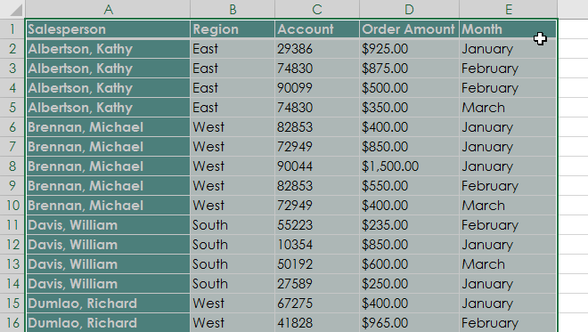
2. Từ tabChèn, hãy nhấp vào lệnhPivotTable.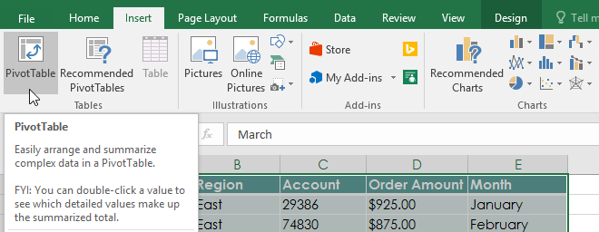
3. Hộp thoạiTạo PivotTablesẽ xuất hiện. Chọn cài đặt của bạn, sau đó nhấp vàoOK. Trong ví dụ của chúng tôi, chúng tôi sẽ sử dụngBảng1làm dữ liệu nguồn và đặt PivotTable vàotrang tính mới.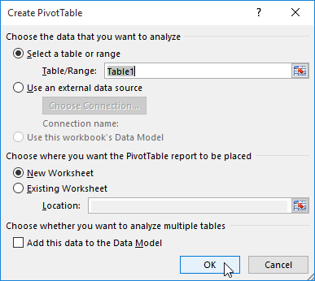
4. PivotTablevàDanh sách trườngtrống sẽ xuất hiện trong trang tính mới.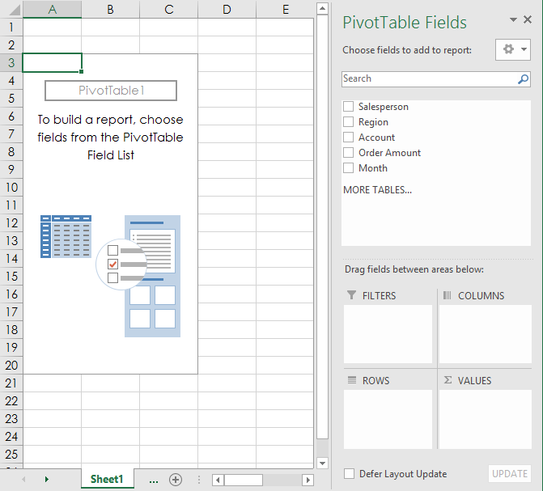
5. Sau khi tạo PivotTable, bạn sẽ cần quyết địnhtrườngnào cần thêm. Mỗi trường chỉ đơn giản là mộttiêu đề cộttừ dữ liệu nguồn. Trong danh sáchPivotTableTrường, hãy chọn hộp cho từng trường bạn muốn thêm. Trong ví dụ của chúng tôi, chúng tôi muốn biết tổng sốsố tiềnđược bán bởi mỗinhân viên bán hàng, vì vậy chúng tôi sẽ kiểm tra các trườngSalespersonvàOrderAmount.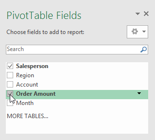
6. Các trường đã chọn sẽ được thêm vào một trong bốn khu vực bên dưới. Trong ví dụ của chúng tôi, trườngNhân viên bán hàngđã được thêm vào khu vựcHàng, trong khiSố tiền đặt hàngđã được thêm vàoGiá trị. Bạn cũng có thểkéovà thảcác trường trực tiếp vào khu vực mong muốn.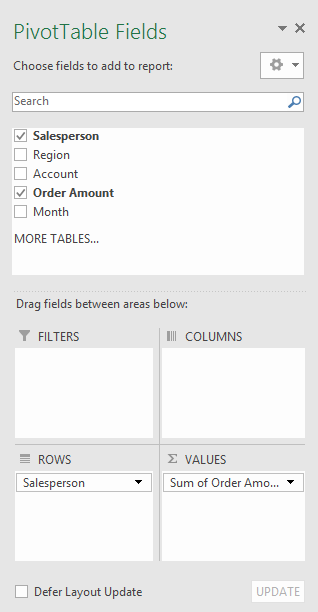
7. PivotTable sẽ tính toán và tóm tắt các trường đã chọn. Trong ví dụ của chúng tôi, PivotTable hiển thịsố tiền mà mỗi nhân viên bán hàngđã bán.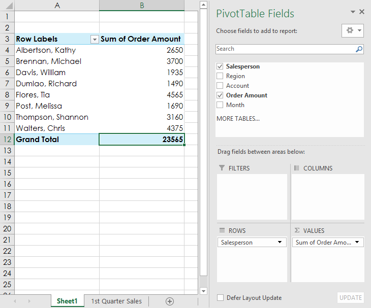
Cũng giống như bảng tính thông thường, bạn có thể sắp xếp dữ liệu trong PivotTable bằng lệnhSắp xếp & Lọctrên tab Trang chủ. Bạn cũng có thể áp dụng bất kỳ loạiđịnh dạng sốnào bạn muốn. Ví dụ: bạn có thể muốn thay đổi định dạng số thànhTiền tệ. Tuy nhiên, hãy lưu ý rằng một số loại định dạng có thể biến mất khi bạn sửa đổi PivotTable.
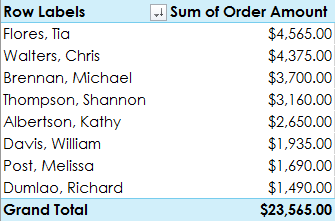
Nếu bạn thay đổi bất kỳ dữ liệu nào trong trang tính nguồn của mình, PivotTablesẽ không tự động cập nhật. Để cập nhật thủ công, hãy chọn PivotTable rồi đi tớiPhân tích > Làm mới.
Xoay dữ liệu
Một trong những điều tuyệt vời nhất về PivotTable là chúng có thể nhanh chóngxoay vòng—hoặc sắp xếp lại—dữ liệu của bạn, cho phép bạn kiểm tra trang tính của mình theo nhiều cách. Xoay dữ liệu có thể giúp bạn trả lờicác câu hỏi khác nhauvà thậm chíthử nghiệmdữ liệu của bạn để khám phá các xu hướng và mẫu mới.
Để thêm cột:
Cho đến nay, PivotTable của chúng tôi chỉ hiển thịmột cộtdữ liệu tại một thời điểm. Để hiển thịnhiều cột, bạn cần thêm một trường vào khu vựcCột.
- Kéo một trường từDanh sách trườngvào khu vựcCột. Trong ví dụ của chúng tôi, chúng tôi sẽ sử dụng trườngTháng.
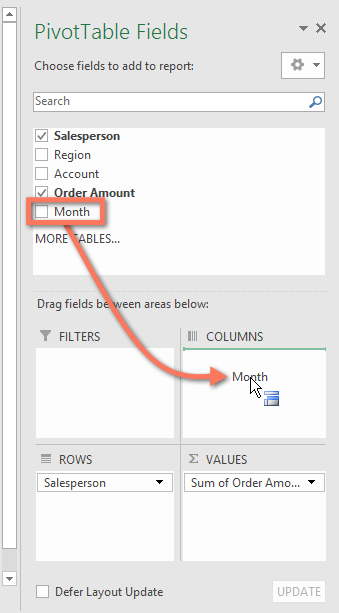
2. PivotTable sẽ bao gồm nhiều cột. Trong ví dụ của chúng tôi, hiện có một cột chodoanh số hàng thángcủa mỗi người, ngoàitổng cộng.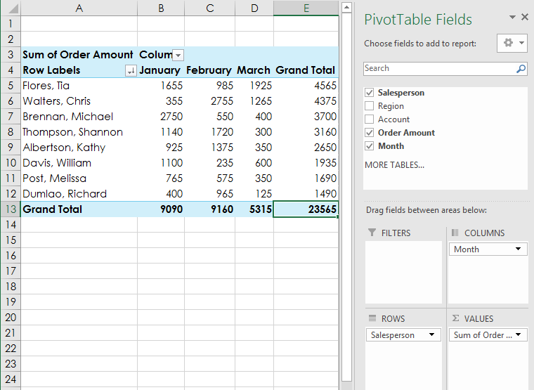
Để thay đổi một hàng hoặc cột:
Thay đổimột hàng hoặc cột có thể mang lại cho bạn cái nhìn hoàn toàn khác về dữ liệu của mình. Tất cả những gì bạn phải làm làxóatrường được đề cập, sau đóthay thếtrường đó bằng trường khác.
- Kéo trường bạn muốn xóa ra khỏikhu vực hiện tạicủa nó. Bạn cũng có thểbỏ chọnhộp thích hợp trongDanh sách trường. Trong ví dụ này, chúng tôi đã xóa các trườngThángvàNhân viên bán hàng.
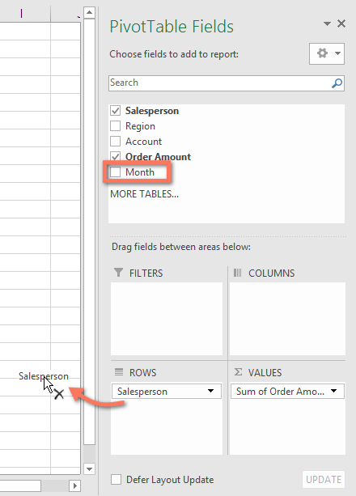
2. Kéotrường mớivàovùng mong muốn. Trong ví dụ của chúng tôi, chúng tôi sẽ đặt trườngVùngbên dướiHàng.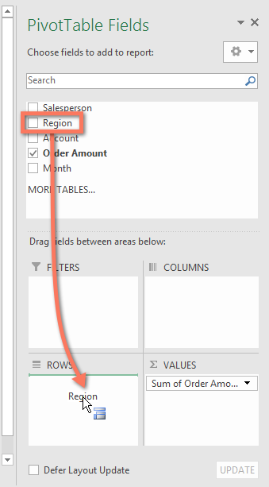
3. PivotTable sẽ điều chỉnh—hoặc xoay—để hiển thị dữ liệu mới. Trong ví dụ của chúng tôi, nó hiện hiển thịsố lượng bán theo từng khu vực.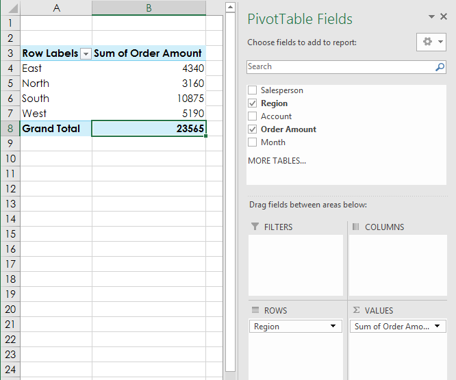
Để tìm hiểu thêm:
Sau khi bạn cảm thấy thoải mái với PivotTable, hãy xem lại bài học Làm nhiều hơn với PivotTable của chúng tôi để biết thêm các cách tùy chỉnh và thao tác với dữ liệu.
Thử thách!
- Mở sổ làm việc thực hành của chúng tôi.
- TạoPivotTabletrong một trang tính riêng biệt.
- Chúng tôi muốn trả lời câu hỏiTổng số tiền bán được ở mỗi khu vực là bao nhiêu?Để thực hiện việc này, hãy chọnKhu vựcvàSố tiền đặt hàng. Khi bạn hoàn tất, sổ làm việc của bạn sẽ trông như thế này:
 4. Trong khu vựcHàng, hãy xóaVùngvà thay thế bằngNhân viên bán hàng.
5. ThêmThángvào khu vựcCột.
6. Thay đổi định dạng số của các ôB5:E13thànhTiền tệ.Lưu ý: Bạn có thể phải mở rộng cột C và D để xem các giá trị.
7. Khi bạn hoàn tất, sổ làm việc của bạn sẽ trông như thế này:
4. Trong khu vựcHàng, hãy xóaVùngvà thay thế bằngNhân viên bán hàng.
5. ThêmThángvào khu vựcCột.
6. Thay đổi định dạng số của các ôB5:E13thànhTiền tệ.Lưu ý: Bạn có thể phải mở rộng cột C và D để xem các giá trị.
7. Khi bạn hoàn tất, sổ làm việc của bạn sẽ trông như thế này:

/en/excel/doing-more-with-pivottables/content/